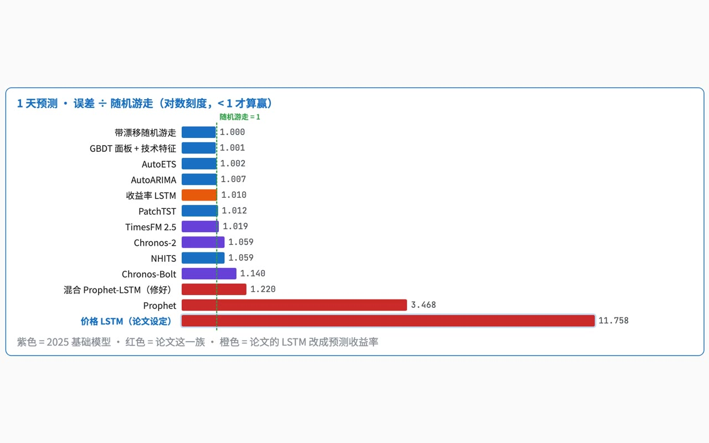

Nº07 · Re-run of my York MSc thesis · Oct 2026重做约克硕士论文 · 2026 年 10 月Time-series forecasting · evaluation design时间序列预测 · 评估设计
Revisiting my MSc thesis
I re-ran my master's thesis this year. It turned out my model couldn't beat the simplest guess, “tomorrow's price equals today's”, and I found two bugs in my code. I wrote that down honestly, and now I always compare against the simplest baseline first.今年我重跑了自己的硕士论文。结果我的模型连最简单的猜法「明天的价格 = 今天的价格」都没打过，我还在代码里找到了两个 bug。我如实写了出来，现在我总是先和最简单的基准比。

01Problem问题
The thesis compared four models on one 80/20 split and called the hybrid best on Apple, with p < 0.05. It never compared against the simplest forecast, and its numbers didn't hold up when I re-ran them.论文在一次 80/20 切分上比较四个模型，结论是苹果股票上混合模型最好、p < 0.05。它从没和最简单的预测比过，而且重跑时数字站不住。
02What I learned, and how I work now我学到了什么，现在怎么做
- Nothing in the original study had to be beaten: four models ranked against each other always produce a winner. Now I write down the simplest baseline and the bar to clear before building anything.原研究里没有一个必须打赢的对象：四个模型互相排名，总会有赢家。现在我在动手之前先写下最简单的基准，以及要比它好多少才算数。
- I read R² 0.9 as success without asking what a trivial forecast scores (0.99). Now a good-looking number makes me look for leakage and misalignment first.当年我把 R² 0.9 当成成功，没问过最笨的预测能得多少（0.99）。现在分数好看时，我先查泄漏和错位。
- Both bugs were invisible in the summary table. Now forecasts and targets are joined by date or ID, the code fails if they don't line up, and preprocessing is fitted on training data only.两个 bug 在汇总表里都看不出来。现在预测和目标按日期或 ID 对齐，对不上代码就报错；预处理只在训练数据上拟合。
- The write-up described methods the code didn't have. Now every claim points to a file or a line, and tables are generated from results, never typed.论文写了代码里没有的方法。现在每句结论都指向一个文件或一行代码，表格从结果文件生成，不手抄。
- The same rules apply to the LLM systems I build: a baseline, a held-out set that never reaches prompts or fine-tuning, the same conditions for every model, and a check that a gain isn't noise.同样的规则用在我做的 LLM 系统上：有基准、留出集不进 prompt 或微调数据、所有模型同条件比较、确认提升不是噪音。
Full reflection and checklist: paper, Section 8 →完整反思和清单：论文第 8 节 →
03What I built我做了什么
- Reproduced the original code unchanged with three seeds; it matches the thesis's own result files, so every problem found is the thesis's, not the re-run's.原代码一行不改、3 个种子重跑，和论文自带的结果文件对得上：找到的问题都属于论文本身，不是复现偏差。
- Listed 12 problems and measured each: no random-walk baseline, unequal horizons, a 60-day misalignment in the hybrid, a scaler fitted on test data, a conclusion its own CSV contradicts.列出 12 个问题并逐条量化：没有随机游走基准、步长不一致、混合模型 60 天错位、缩放器在测试数据上拟合、结论和自带 CSV 矛盾。
- Rebuilt the study: forecast returns at 1, 5 and 20 days from every trading day (208 origins × 20 tickers), with the test period after the foundation models were released.重新设计实验：从每个交易日（208 个起点 × 20 只）预测 1、5、20 天收益率，测试期在基础模型发布之后。
- Scored 16 models against the random walk with Diebold-Mariano tests, checked a second test period (2023–2025), and tested whether volatility is predictable instead.16 个模型都和随机游走比，并做 Diebold-Mariano 检验；用第二段测试期（2023–2025）复查；再测试波动率是否可预测。
04Watch the re-run看重做过程
05Measured测量结果
7–13×
the thesis's hybrid error versus “tomorrow = today” (RMSE, 4 series)论文混合模型的误差是「明天 = 今天」的倍数（RMSE，4 个序列）
src · york-irp-revisit/results/e01.json
0 / 16
models significantly better than the random walk, at 1, 5 or 20 days个模型在 1、5、20 天上显著优于随机游走
src · york-irp-revisit/results/e2_scores.csv
−20%
volatility forecast error versus the naive baseline (p = 0.048)波动率预测误差，相对朴素基准（p = 0.048）
src · york-irp-revisit/results/e5_volatility.csv
12
problems in the original study, each one measured个原论文问题，逐条量化
src · Vault · IRP 2026 revisit, §3
06Limits, stated plainly局限，直说
- Moirai 2 and TimesFM 3 were not run (dependency conflicts); Chronos-2 was used without covariates.没跑 Moirai 2 和 TimesFM 3（依赖冲突）；Chronos-2 没有用协变量。
- The main test period is 11 months; Sharpe ratios and 20-day tests have little power.主测试期只有 11 个月；Sharpe 和 20 天步长的检验功效有限。
- No multiple-comparison correction; with no model significantly better, a correction would not change the conclusion.没做多重比较校正；本来就没有显著更好的模型，校正不改变结论。
- Point forecasts only on public daily data; no intraday data, news or order flow.只用公开日线数据；没有日内数据、新闻或订单流。
07Next下一步
- Publish the repository with the locked environment so the whole study re-runs in one command.公开代码仓库和锁定的环境，一条命令复现全部实验。
- Feed VIX and SPY to Chronos-2 as covariates, and add Moirai 2 in its own environment.把 VIX、SPY 作为协变量喂给 Chronos-2，并在单独环境里补上 Moirai 2。